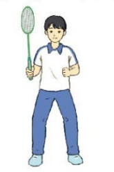
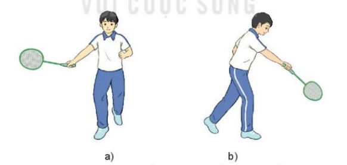
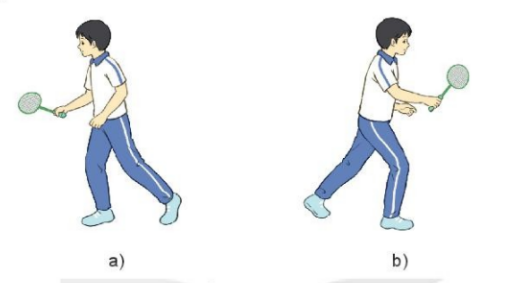
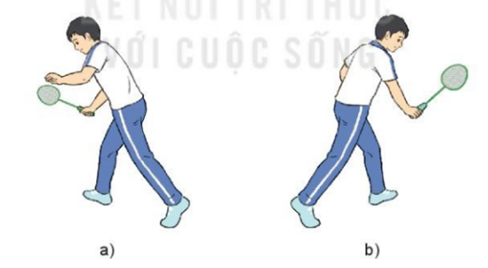

Bài 1: Kĩ thuật di chuyển đơn bước
🏃♂️ Tư thế chuẩn bị (TTCB)
Hai chân đứng rộng bằng vai, gối khuỵu, tay phải cầm vợt ở phía trước.

1. Di chuyển TIẾN (Phải & Trái)
- Tiến phải: Chân phải bước ra trước chếch phải. Gối phải khuỵu, trọng tâm dồn chân phải. Chân trái duỗi thẳng, chạm sân bằng nửa trước bàn chân.
- Tiến trái: Chân phải bước ra trước chếch trái. Chân phải khuỵu, trọng tâm dồn chân phải. Chân trái duỗi thẳng.

2. Di chuyển SANG NGANG (Phải & Trái)
- Sang phải: Chân phải bước sang ngang một bước, xoay người sang phải. Gối phải khuỵu, trọng tâm dồn chân phải.
- Sang trái: Chân phải bước sang trái một bước theo đường vòng cung qua phía trước chân trái, xoay người sang trái. Gối phải khuỵu.

3. Di chuyển LÙI (Phải & Trái)
- Lùi phải: Chân phải bước lùi về sau một bước. Gối phải khuỵu, trọng tâm dồn vào chân phải.
- Lùi trái: Chân trái bước lùi về sau một bước. Gối trái khuỵu, trọng tâm dồn vào chân trái.

Bài 1: Kĩ thuật di chuyển đơn bước
Trò chơi: Di chuyển ngang đổi cầu
Mục đích: Rèn luyện phản xạ và phát triển sức nhanh.
Chuẩn bị: Các đội đứng thành hàng dọc sau vạch xuất phát.
Thực hiện: Khi có hiệu lệnh, lần lượt từng bạn di chuyển lên điểm A nhặt cầu -> di chuyển ngang đổi cầu ở điểm A và B -> chạy về cuối hàng.
🏃♂️ Tư thế chuẩn bị (TTCB)
Hai chân đứng rộng bằng vai, gối khuỵu, trọng lượng dồn đều, tay phải cầm vợt ở phía trước, mắt quan sát cầu.
1. Di chuyển TIẾN:
Bước chân phải ra trước chếch phải/trái. Gối khuỵu, trọng tâm dồn chân trước.
2. Di chuyển NGANG:
Bước chân phải sang ngang hoặc vòng qua trước chân trái. Xoay người, trọng tâm dồn chân phải.
1. Bài tập bước đơn không cầu:
- Bước tiến 1 bước → Trở về
- Bước lùi 1 bước → Trở về
- Bước ngang trái/phải (8–10 lần mỗi hướng)
2. Bài tập phản xạ tín hiệu:
Di chuyển nhanh theo khẩu lệnh của GV: Tiến – Lùi – Trái – Phải.
3. Kết hợp tay – chân:
Thực hiện đơn bước kết hợp vung tay mô phỏng động tác đánh cầu thực tế.
⚠️ Lỗi sai: Bước di chuyển quá ngắn.
🎯 Cách sửa: Sử dụng vạch kẻ hoặc nấm chiến thuật để tập bước đúng độ dài.
Kết thúc: Nhanh chóng thu chân về Tư thế chuẩn bị ban đầu.
⚠️ Lưu ý quan trọng
Lỗi sai thường gặp:
Bước di chuyển quá ngắn, không đủ tầm với cầu.
Cách sửa:
Đặt vị trí đánh dấu sẵn (vạch kẻ hoặc nấm chiến thuật) trên sân để tập bước đúng độ dài.
.technical-container {
font-family: 'Segoe UI', Tahoma, Geneva, Verdana, sans-serif;
line-height: 1.6;
max-width: 850px;
margin: 20px auto;
color: #2c3e50;
padding: 20px;
background: #fff;
}
.main-title {
text-align: center;
color: #1a5276;
border-bottom: 3px solid #3498db;
padding-bottom: 10px;
text-transform: uppercase;
}
.step-box {
padding: 15px;
margin: 15px 0;
border-radius: 8px;
}
.ttcb { background: #e8f6f3; border-left: 5px solid #1abc9c; }
.finish { background: #f4f6f7; border-left: 5px solid #7f8c8d; text-align: center; }
.execution-grid {
display: grid;
grid-template-columns: repeat(auto-fit, minmax(250px, 1fr));
gap: 15px;
margin-top: 20px;
}
.move-card {
background: #fff;
border: 1px solid #d6dbdf;
border-radius: 10px;
padding: 15px;
transition: transform 0.2s;
}
.move-card:hover { transform: translateY(-5px); box-shadow: 0 5px 15px rgba(0,0,0,0.1); }
.move-card h4 {
margin-top: 0;
color: #2980b9;
border-bottom: 1px solid #eee;
padding-bottom: 10px;
}
.warning-box {
background: #fef5e7;
border: 2px dashed #f39c12;
padding: 20px;
margin-top: 30px;
border-radius: 10px;
}
.flex-warning { display: flex; gap: 20px; flex-wrap: wrap; }
.error, .fix { flex: 1; min-width: 200px; }
ul { padding-left: 20px; }
ul li { margin-bottom: 10px; }
strong { color: #c0392b; }
Hành trình làm chủ sân cầu và nâng tầm thể chất
Chào mừng các bạn đến với không gian tự học cầu lông trực tuyến dành riêng cho học sinh lớp 10. Đây không chỉ là nơi cung cấp kiến thức về kỹ thuật, mà còn là lộ trình giúp bạn rèn luyện sự bền bỉ, phản xạ nhanh nhẹn và tư duy chiến thuật sắc bén. Tại đây, mọi bài giảng từ cơ bản như cách cầm vợt, di chuyển bước chân đến những kỹ thuật nâng cao đều được trình bày trực quan, giúp bạn dễ dàng thực hành và hoàn thiện kỹ năng mỗi ngày. Hãy cùng chúng tôi khơi dậy đam mê thể thao và xây dựng một lối sống năng động, khỏe mạnh ngay hôm nay.
About
Chào mừng bạn đến với hệ thống tài nguyên số chuyên biệt cho môn Cầu lông thuộc chương trình Giáo dục phổ thông lớp 10. Tại đây, chúng tôi cung cấp hệ thống bài giảng lý thuyết, video hướng dẫn kỹ thuật chuẩn xác và các phương pháp tập luyện bài bản. Mục tiêu của cổng học liệu là hỗ trợ học sinh nắm vững kỹ năng từ cơ bản đến nâng cao, đồng thời giúp giáo viên tối ưu hóa quy trình giảng dạy thông qua các tư liệu trực quan sinh động. Learn more...